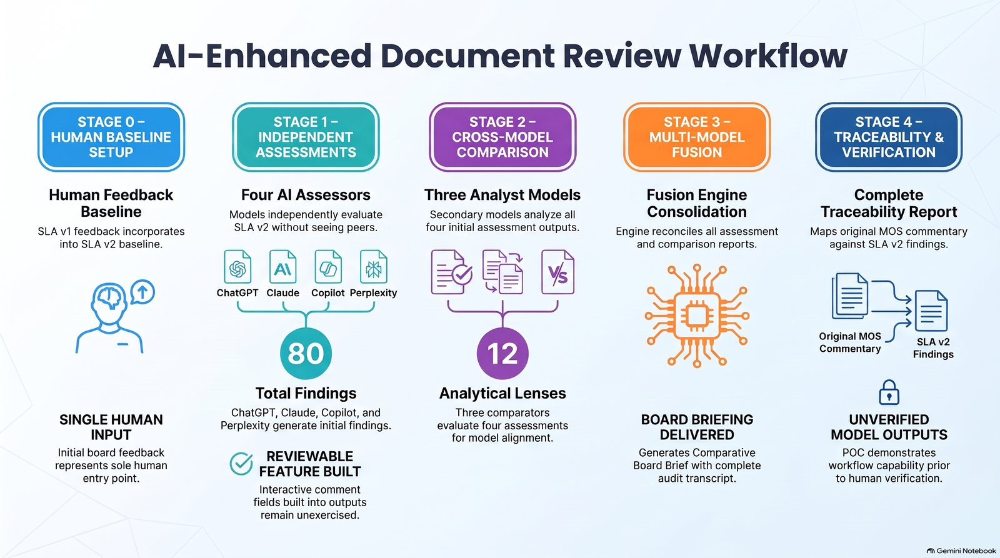

Workflow Narrative — AI-Enhanced Document Review & Assessment POC
The reference version of the project story: what was run, in what order, by which models — and what was deliberately not exercised. Adopted terminology throughout: fusion engine · assessments · cross-model comparison reports (twelve lenses).



Single reference version of the project story, cleaned up for consistency and clarity. Prepared for review; to be incorporated into the document set once approved.
What this project is
This project is a proof of concept for a repeatable workflow design pattern: an AI-enhanced, multi-participant document review and assessment workflow. A real governance document — the USU–AGI Service Level Agreement, Draft 2.0 ("SLA v2") — was processed through successive layers of AI analysis, cross-checking, and consolidation. The only human-generated input to the entire workflow was the original board-level reviewer feedback (the "MOS" comments) on the earlier SLA v1.
The workflow, stage by stage
| Stage | What happened | Output |
|---|---|---|
| 0 · Human start | Board-level reviewer "MOS" commented on SLA v1 (Sept 12, 2026); USU issued SLA v2 (Oct 14, 2026) incorporating those comments | SLA v2 — the one document used downstream |
| 1 · Four independent assessments | SLA v2 was handed to four different AI models, each instructed to assess the SLA and look for areas of potential improvement | Four assessments — 80 findings total (ChatGPT 24, Claude 18, Copilot 10, Perplexity 28) |
| 2 · Three cross-model comparison reports | All four assessments were handed to three different AI models. Each analyst model received all four assessments and was tasked with comparing them — areas of alignment, areas of disagreement, and suggestions | Three comparison reports — effectively 4 × 3 = 12 lenses brought to bear on the same document |
| 3 · Fusion into one report | The four assessments and the three comparison reports were handed to the fusion engine, which looked across everything and condensed it — assessing all of the model reviews into a single overall report | Final Comparative Board Brief (with a full transcript as the audit trail) |
| 4 · Closing the loop | The MOS commentary (written against SLA v1) was compared against SLA v2 to determine whether the MOS suggestions were applied — and compared against the broader model assessments for overlap and other correspondences | Traceability report (Draft 1) |
Stage detail
Stage 1 — Four independent assessments of SLA v2
SLA v2 was the initial — and only — document supplied to the models. Four different AI models were each given the SLA with the same task: assess the agreement and look for areas of potential improvement. The four models worked independently; none saw another's work. Together they produced 80 findings.
Each model was also instructed to produce a reviewable version of its assessment: an interactive document designed to be distributed to human reviewers, so those reviewers could comment on the model's assessment item by item. That capability was built into every Stage 1 document (comment fields, per-item status tracking, and note export) and remains available — but it was never used in this run (see Human involvement below).
Stage 2 — Three models compare the four assessments (the 12 lenses)
The four Stage 1 assessments were then handed to three different AI models. Each of the three received all four assessments. Their task was to compare the assessments: identify where the models aligned, where they disagreed, and what to suggest in response. Read together, the stage produced four assessments times three analysts — twelve distinct lenses on the same 80 findings.
Stage 3 — Fusion into a final report
The comparison reports were then handed to the fusion engine, which looked across all of the assessments and all of the alignment assessments, reconciled them, and presented an overall report — condensing and assessing the full set of model reviews into one final document. In this repository that output is the Final Comparative Board Brief; the fusion transcript preserves the reconciliation step, including corrections the fusion pass made to the earlier comparisons.
Stage 4 — Closing the loop with the human feedback
Finally, the commentary generated against version 1 of the SLA — the MOS document — was brought back into the workflow. It was compared against SLA v2 to assess whether the suggestions made in the MOS document had been applied, and it was compared against the broader model assessments to identify areas of overlap and other correspondences. That comparison is the traceability report (Draft 1).
Human involvement — what happened and what did not
- The only human-generated input to the workflow was the original MOS feedback on SLA v1.
- At no time was any of the AI-produced material consumed or closely reviewed by a human.
- No documents were distributed to reviewers, and no reviewer comments were made on the model outputs — despite that functionality being built into the initial review documents. The interactive/commenting features exist and remain available for a future run; they were simply not exercised in this POC.
- Because of the above, every statement in the AI materials is unverified model output. The purpose of the POC is to demonstrate what the workflow produces — not to certify the findings. Nothing here is legal advice, and external-compliance assertions would need verification with counsel before any decision use.
Facts at a glance (consistency reference)
- Document under review: USU–AGI SLA Draft 2.0 (Oct 14, 2026) — "SLA v2"
- Human predecessor: 19 MOS comments on SLA v1 (Sept 12, 2026); v1 itself was not part of the model workflow
- Stage 1 models (assessors): ChatGPT (24), Claude (18), Copilot (10), Perplexity (28) — 80 findings, Nov 7, 2026
- Stage 2 models (comparators): GPT, Gemini Pro, Claude Haiku — 3 comparison reports over 4 assessments = 12 lenses, Nov 20, 2026
- Stage 3: Fusion engine → Final Comparative Board Brief (+ fusion transcript as audit trail), Nov 20, 2026
- Stage 4: MOS ↔ v2 ↔ model-assessment comparison → Traceability report (Draft 1), Nov 20, 2026
- Human review of AI output: none at any stage; reviewability features built but unused
This page renders the project narrative (source:
AI-Review-Workflow-Narrative.md) — an AI-prepared navigation aid, part of the
USU–AGI SLA review record; not legal advice. Companion navigation:
roadmap ·
document hub · README.